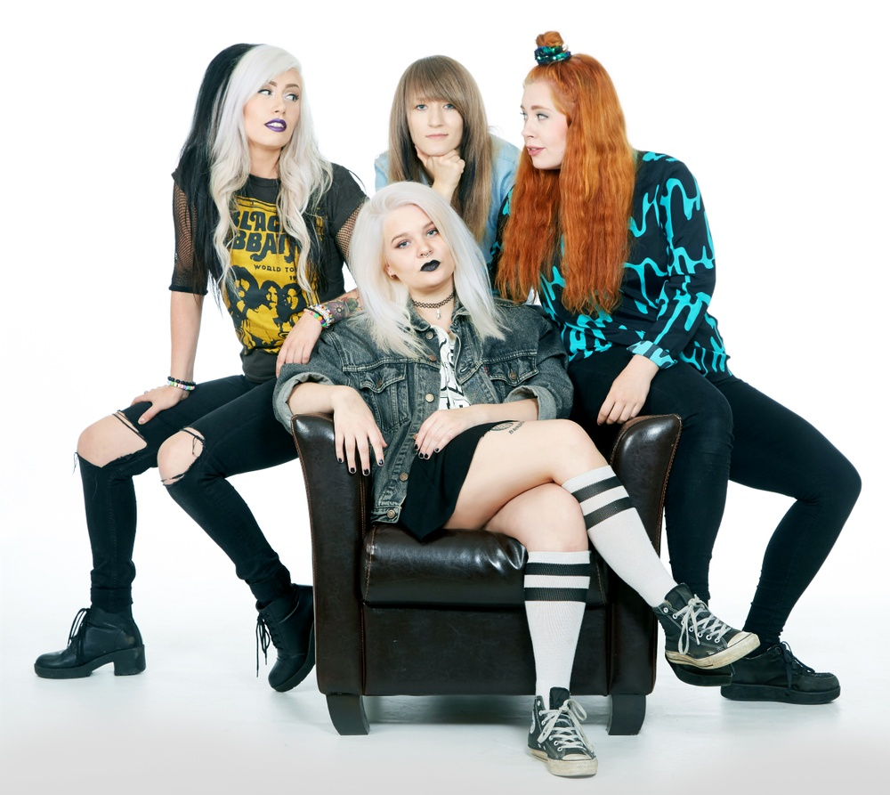

A sikeres svéd Star Stable Online játék a The Miscreants rockzenekarral bővíti zenei kínálatát. A Star Stable és a The Miscreants mögött álló négy erős női zenész együtt forradalmasítani akarja a zenei és IT-ipart az erős női képviselet előmozdításával.
„Ez csak a kezdet! Célunk, hogy a kalandot, a játékokat és a zenét szerető kreatív lányok vezető platformjává váljunk” - mondja Taina Malén, a Star Stable Entertainment AB CBDO-ja.
Ma a Star Stable a világ leggyorsabban növekvő ló- és kalandjátéka, havonta több mint félmillió aktív játékossal. Tavaly a Star Stable egyre inkább a zenére helyezte a hangsúlyt.
„A zene központi szerepet játszik játékosaink életében. A zene beépítése a Star Stable élményébe lehetőséget ad számunkra, hogy ápoljuk és megerősítsük a Star Stable márka és játékosaink közötti kapcsolatot. Ezen felül lehetővé teszi számunkra, hogy más csatornákon is új közönséget érjünk el” – mondja Taina Malén.
A Star Stable Entertainment új zenei irányelve 2019 elején indult el egy EP megjelenésével, amelyet a Star Stable saját zenei részlege készített, és amely a játék egyik legnépszerűbb karakteréhez, a Léleklovas Lisa Petersonhoz kapcsolódik.
Idén már három újabb kiadványt tervezünk új előadókkal. Az első a The Miscreants rockzenekar, amely nyáron kezdi meg dalainak megjelenését a játékban. Augusztusban a The Miscreants első EP-je, a „In It to Win It” jelenik meg, és elérhetővé válik a Spotify-on, az Apple Music-on és más digitális streaming-platformokon.
A The Miscreants mögött a skövdei, díjnyertes Browsing Collection zenekar áll. A zenekar tíz év kemény munkája és többek között Dél-Koreában, Hollandiában és Angliában tett turnéi után sikeresen megvetette a lábát mind a svéd, mind a nemzetközi zenei színtéren.
„A The Miscreants hihetetlenül menő és tehetséges. Remek példaképek, akik megmutatják a lányok kreativitását és potenciálját, ami közös bennük a játékosainkkal” – mondja Taina Malén.
„Amikor több mint 10 évvel ezelőtt megalapítottuk a zenekarunkat, még csak 11 és 15 év közöttiek voltunk. Nagyon keményen kellett dolgoznunk ahhoz, hogy meghallgassanak minket egy hagyományosan férfiak által dominált iparágban és műfajban. Most szeretnénk hozzájárulni a zeneipar átalakulásához, és példaképek lenni a kreatív fiatal lányok számára” – mondja Moa Lenngren, a Browsing Collection gitárosa, aki ma a többi taggal, Mimi Branderrel (ének és gitár), Nora Lenngrennel (basszusgitár) és Carro Karlssonnal (dob) együtt a Sweden Rock Festival együttműködésével zenei tábort szervez fiatal lányoknak. 2019 áprilisában a Browsing Collection elnyerte a „Legjobb ifjúsági kezdeményezés” díjat a Framtidens Musikpris 2019 (Future Music Awards 2019) gálán, amelyet a svéd Young Musicians nemzeti szövetség és a svéd Stim szerzői jogi szervezet alapított.
„Osztjuk a Star Stable értékeit, és ezt hatalmas lehetőségnek tartjuk arra, hogy új közönséget érjünk el, és megmutassuk a játék célcsoportjának, hogy lehetséges megvalósítani az álmaikat” – mondja Moa Lenngren.
A Star Stable-ről
A Star Stable egy globális szórakoztatóipari vállalat, amely különböző platformokon játékokat és történeteket hoz létre, ahol a lányok kalandokat élhetnek át, kibontakoztathatják kreativitásukat és barátságokat köthetnek. Mindez a Star Stable Online-nal kezdődött, egy online lovas kalandjátékkal, amelynek helyszíne a Jorvik nevű varázslatos sziget. Jorvikban a lányok lóháton fedezhetik fel a kalandokat, kihívhatják magukat vagy barátaikat a számos verseny egyikén, küldetéseket oldhatnak meg és új barátokra tehetnek szert. 2020-ban 18 millió regisztrációval, 14 millió játékórával rendelkezik eredeti játékunk, a Star Stable Online, és havonta 1,4 millió aktív játékosunk van. A Star Stable Entertainment célja, hogy új termékeket kínáljon és új interaktív élményeket nyújtson, amelyek jobban tükrözik a különböző korú lányok érdekeit: a játék ihlette második könyvtrilógia újabb világszintű megjelenése, saját lemezkiadónk által kiadott zenei albumok, animációs sorozat formájában megjelenő új média, frissített, lovakkal kapcsolatos gondozási alkalmazás, valamint egy imádnivaló, többjátékos mobil kaland.